Ils nous font confiance
Il serait long et fastidieux de présenter la liste exhaustive de nos clients. Voici quelques exemples de collaborations qui illustrent une partie de notre savoir-faire.
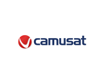
Camusat
Travaux effectués par QUALICOM-CI
- Réhabilitation de pylônes et réseau de terre : 24 sites
- Projet Towers Mapping : 5 sites
- Projet ATHENA OCI : 37 sites (supports, coffret, mise à la terre, câblage énergie)
- Projet NOKIA ATHENA : 9 sites (installations + mise en service)
- Survey 855 sites MTN : 31 sites
- Construction sites ORANGE : 4 sites clé en main
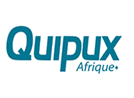
Quipux Afrique
Travaux effectués par QUALICOM-CI
- Interconnexion de l'unité mobile au site Quipux PHB
- Interconnexion de l'ancien site QX Korhogo au site de restitution
- Câblage informatique du site de Yopougon
- Conception et mise en œuvre du Call center QX PHB
- Livraison de bande de sauvegarde et de carte téléphonique T0
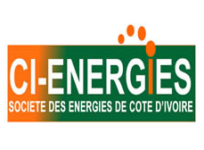
CI-ENERGIES
Travaux effectués par QUALICOM-CI
- Fourniture de matériels informatiques
- Datacenter avec liaisons backbones FO
- Câblage réseau informatique et téléphonique aux normes VDI
- Interconnexion des sites CI-Energie Yopougon – Plateau
- Couverture WiFi
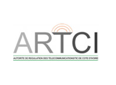
ARTCI
Travaux effectués par QUALICOM-CI
- Audit du câblage informatique et téléphonique
- Extension du réseau sans fil
- Couverture WiFi : Forum régional de l'IUT / TICs pour l'Afrique
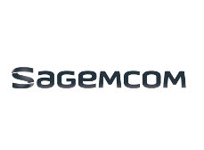
SAGEMCOM
Travaux effectués par QUALICOM-CI
- Pose d'antennes panneaux, faisceau local & remote
- Tirage feeders, installation BTS et BE, raccordement énergie
- Mesure radio, liaison FH : 4 sites
- Réalisation de 3 massifs 3×1×0,3
- Installation de 3 abris, câblages électriques : 3 sites
- Étanchéité sur le site de GOLF OCI
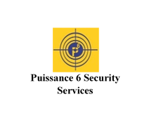
Puissance 6 Security Services
Travaux effectués par QUALICOM-CI
- Installation de la radio de transmission
- Deux pylonets ST15 de 30 m (San Pedro et Abidjan)
- Protection contre la foudre du bâtiment et du pylonet
- Système de vidéosurveillance
- Câblage informatique et téléphonique du nouveau siège
- Interconnexion de l'ancien siège au nouveau siège
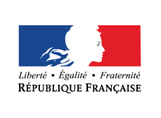
Ambassade de France
Travaux effectués par QUALICOM-CI
- Câblage informatique de l'ancien bâtiment de la trésorerie
- Mise à niveau de l'installation électrique
- Installation de caméras de surveillance
- Système de contrôle d'accès
- Mise à niveau de l'installation téléphonique
- Installation de splits
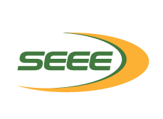
SEEE
Travaux effectués par QUALICOM-CI
- Fourniture de stations de travail
- Fourniture de serveurs et baie de stockage
- Fourniture de PC portables
- Fourniture de système d'impression
- Fourniture de consommables de bureau et informatiques
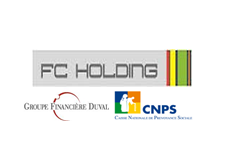
FC HOLDING
Travaux effectués par QUALICOM-CI
- Câblage informatique et téléphonique du siège
- Système téléphonique IP
- Livraison et mise en service des serveurs et stations de travail
- Maintenance des équipements informatiques et téléphoniques
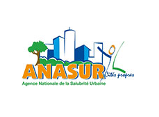
ANASUR
Travaux effectués par QUALICOM-CI
- Fourniture et installation de 2 pylônes ST15 + interconnexion par radios MikroTik QRT 5ac series
- Interconnexion Siège (Vallon) – Akouédo
- Interconnexion Siège (Vallon) – BSU (Angré 8ᵉ tranche)
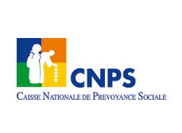
CNPS
Travaux effectués par QUALICOM-CI
- Rénovation sur l'APS de Yopougon
- Étanchéité
- Plomberie
- Électricité
- Aluminium
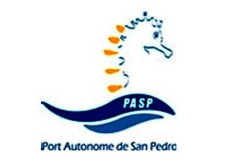
Port Autonome de San Pedro
Travaux effectués par QUALICOM-CI
- Maintenance des équipements informatiques (ordinateurs, serveurs, imprimantes et scanners)
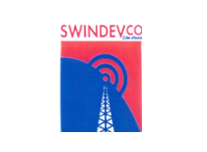
SWINDEVCO
Travaux effectués par QUALICOM-CI
- Pylône haubané de 9 mètres sur dalle, sur 3 sites
- Maintenance de sites Moov : 70 sites (gestion d'énergie et groupes électrogènes)
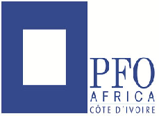
PFO Africa
Travaux effectués par QUALICOM-CI
- Réhabilitation du complexe hôtelier de la Baie des Sirènes : CFA / télévision / téléphonie / informatique
- Mise en place d'un portail captif
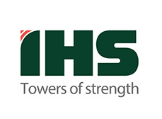
IHS
Travaux effectués par QUALICOM-CI
- Réhabilitation de pylônes et réseau de terre : 45 sites
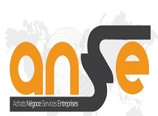
ANSE
Partenaire institutionnel — travaux réalisés avec QUALICOM-CI.